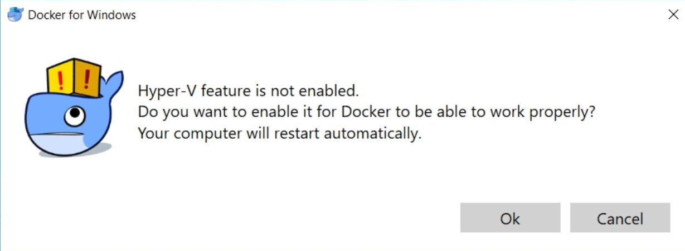
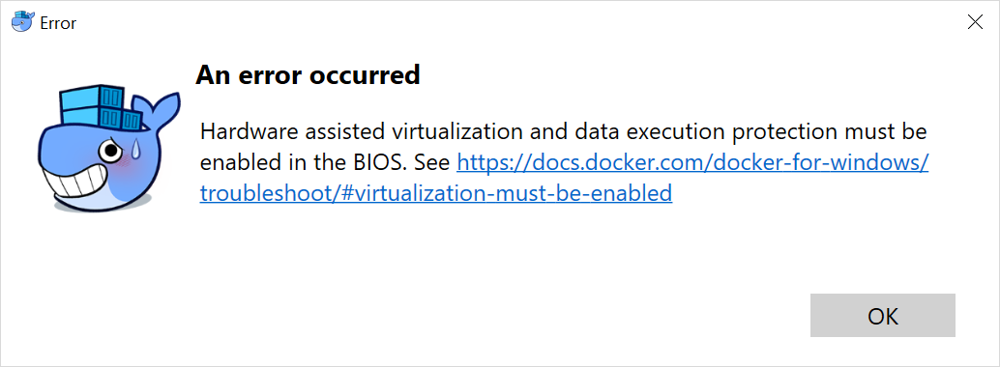
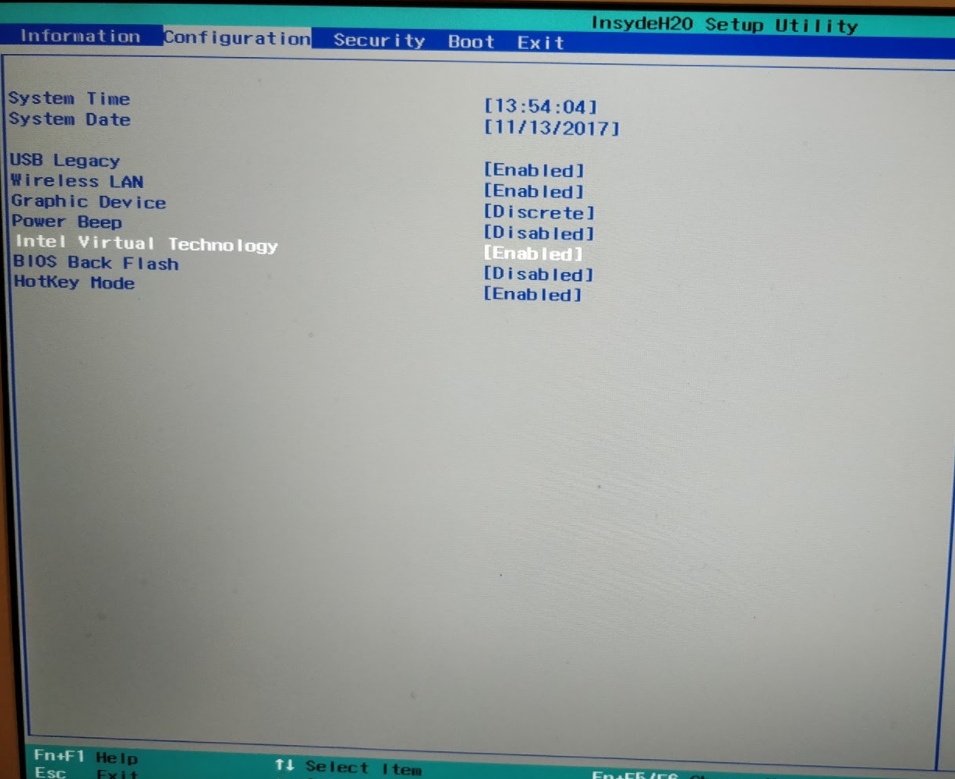
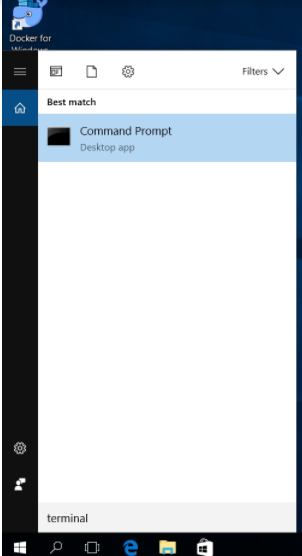
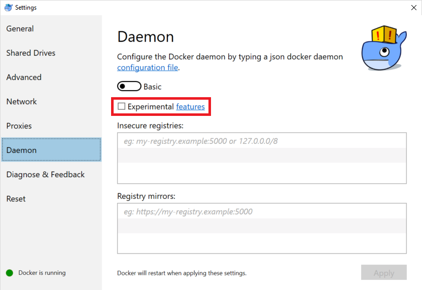
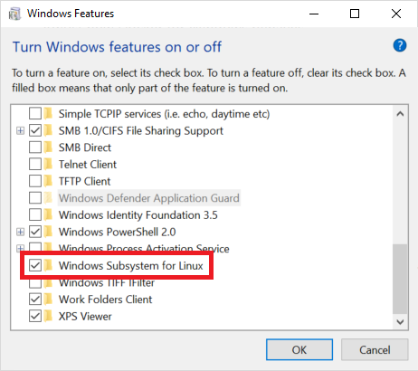
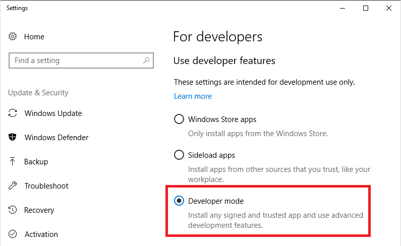

Spryker Dockerized Demoshop on Windows
This is a non-production version.
Installing Demoshop on a Windows Machine
The following article describes how to install Spryker demoshop on your Windows machine.
- Install Docker and Docker-compose on your PC.
- Download InstallDocker.msi here.
- Run the installer and follow the provided installation steps.
- For Docker to Start successfully, Log out your Windows user and then log in again.
- Start Docker for Windows application from your Desktop or Applications menu. The system will ask you to restart PC for starting Hyper-V virtualisation:

- You need to have virtualization enabled in your BIOS if you have this error:

Specific steps on virtualization enabling depend on your BIOS and hardware, but in the most cases you should enter BIOS configuration mode, go to Configuration tab and enable Intel Virtual Technology there.

- Start 'terminal` command line interface:
- Press Windows key.
- Type terminal in the search field and press Enter key.

- Create a working folder in your home directory with the following terminal commands:
C:\Users\voronin>mkdir demoshop C:\Users\voronin>cd demoshop - Download docker-compose.yml (https://github.com/spryker/spryker-academy/blob/master/docker-compose.yml) file and put it to the created directory. In our case this is C:\Users\voronin\demoshop`.
- Start your docker-compose with terminal:
docker volume create app-sync docker volume create jenkins-sync docker-compose up -d - Make changes in in your hosts file for DNS needs:
- Press the Windows key.
- Type Notepad in the search field.
- In the search results, right-click Notepad and select Run as administrator.
- From Notepad, open the following file: C:\Windows\System32\drivers\etc\hosts
-
Add these two strings in the end of the hosts file:
127.0.0.1 www.de.demoshop.local 127.0.0.1 os.de.demoshop.local - Click File->Save to save your changes.
- Use the following URLs to access the demoshop: http://www.de.demoshop.local/ and http://os.de.demoshop.local:8081/.
Starting the Demoshop
For Demoshop to start smoothly, it is recommended to first disable the experimental features in Docker. To disable the experimental features, do the following:
- Right-click on Docker icon in tray and select Settings.
- Select “Daemon” tab and remove the tick from Experimental features checkbox.
- Restart the Docker containers by executing the following commands:

docker-compose down
docker-compose up -d After that you are all set to start your Demoshop. Do the following:
- Starting `terminal` command line interface:
- Press the Windows key.
- Type `terminal` in the search field and press Enter.
- Go to the folder where you installed the Demoshop, by executing “cd demoshop” terminal command:
C:\Users\voronin>cd demoshop - To make sure you use the most recent version of Demoshop, run the following commands:
docker-compose down docker volume rm app-sync docker volume create app-sync docker-compose up -d - Finally, to start the demoshop, run this command:
docker-compose up
Development With Docker Solution (docker-sync)
To develop with Docker solution, do the following:
- Enable Windows subsytem for Linux:
- Click on Start icon, go to Control Panel -> Progarms->Programs and Featurs.
- Select Turn Windows features on and off in the left menu tab.
- Check Windows Subsystem for Linux (beta) checkbox.
- Make sure the Developer mode is enabled:
- Click on Start icon, go to Settings->For Developers.
- Enable the Developer mode, if it is disabled.
- Install Bash for Windows:
- Launch and update Ubuntu:
- Bash on Ubuntu Windows is now an app on your system. Launch it
- Update the OS. Run the following commands:
sudo apt-get update sudo apt-get upgrade - Install Docker:
Follow these instructions to install Docker in WSL bash: https://docs.docker.com/engine/installation/linux/ubuntu/
Note that Docker server doesn't work on WSL (Windows subsystem for Linux) - we will expose Docker for Windows to WSL later.
- Install Docker Compose:
Run the following command in the command line:
Or if that does not work, follow these instructions in WSL bash: https://docs.docker.com/compose/install/sudo apt install docker-compose - Install Ruby and Ruby-dev:
Run the following command:
sudo apt install docker-compose - Install docker-sync:
Run the following command:
sudo gem install docker-sync - Set your docker host as an ENV variable:
Add export DOCKER_HOST=tcp://127.0.0.1:2375 to your ~/.bashrc file of WLS.
In Docker for Windows settings check Expose daemon on.


Open command prompt and type lxrun /install. If bash for windows was already installed before the creators update, you may need to re-install it to get the latest distro.
Last review date: Jan. 22nd, 2018